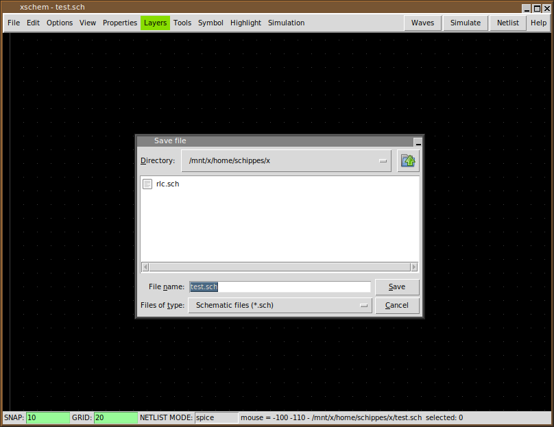

RUN XSCHEM
Assuming xschem is installed in one of the ${PATH} search paths just execute:
user:~$ xschem
the xschem window should appear. If xschem is not in the search path then specify its full pathname.

if a filename is given that file will be loaded on startup:
user:~$ xschem .../xschem_library/examples/0_examples_top.sch
XSCHEM COMMAND LINE OPTIONS
xschem accepts short (-h) or long (--help) options:
usage: xschem [options] [schematic | symbol ]
Options:
-h --help print this help
-n --netlist do a netlist of the given schematic cell
-v --version print version information and exit.
-V --vhdl set netlist type to VHDL
-S --simulate run a simulation of the current schematc file
(spice/Verilog/VHDL, depending on the netlist
type chosen).
-w --verilog set netlist type to Verilog
-i --no_rcload do not load any xschemrc file
-o --netlist_path set output for netlist
-t --tedax set netlist type to tEDAx
-s --spice set netlist type to SPICE
-3 --a3page set page size for pdf export to A3
-x --no_x dont use X (only command mode)
--events Do not use tclreadline, empty tcl shell prompt, dump
activity on stdout for remote controlling other software
-z --rainbow use a raibow-looking layer color table
-W --waves show simulation waveforms
-f --flat_netlist set flat netlist (for spice format only)
-r --no_readline start without the tclreadline package ( this is
necessary if stdin and stdout are to be redirected
for example to /dev/null).
-c --color_ps set color postscript
--plotfile <file> use <file> as output for plot (png, svg, ps)
--rcfile <file> use <file> as a rc file for startup instead of the
default xschemrc.
-p --postscript
--pdf export pdf schematic
--png export png schematic
--svg export svg schematic
-q --quit quit after doing things (no interactive mode)
-l <file>
--log <file> set a log file
-d <n>
--debug <n> set debug level: 1, 2, 3,.. C program debug
-1, -2, -3... TCL frontend debug
xschem: interactive schematic capture program
Example: xschem counter.sch
the schematic file `counter.sch' will be loaded.
CREATING A NEW SCHEMATIC
To create a new schematic run xschem and give a non existent filename:
xschem aaa.sch
You can save the schematic by pressing '<ctrl shift>s' or by using the menu File - Save As:
If no filename change is needed you can just use File - Save. Now a new empty schematic file is created. You can use this test.sch for testing while reading the manual. After exiting XSCHEM you can load directly this schematic with the following commands, they are all equivalent.
# xschem defaults its search to the
# XSCHEM_LIBRARY_PATH root path
# .sch may be omitted, it is added by default ...
xschem test
# or ...
xschem /home/schippes/x/test.sch
# or ...
xschem ${HOME}/schippes/x/test
you can load test.sch when xschem is running by using the load command '<ctrl>o' key or by menu Open command. Use the file selector dialog to locate the schematic and load it in. When loading a new file XSCHEM asks to save the currently loaded schematic if it has been modified.